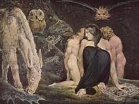

Геката, в грецькій міфології володарка мороку, богиня ночі. Геката володарювала над усіма привидами і чудовиськами, нічними видіннями і чарами. Народилася вона в результаті шлюбного союзу титану Перса і Астерія. Цар богів Зевс наділив її владою над долями землі і моря, а Уран обдарував незламною силою. Від Форкіс Геката народила Сциллу.
Культ Гекати існував спочатку у фракійців і від них уже перейшов до греків. Геката (?????), в давньогрецькому пантеоні богів була божеством місячного світла, древньої богинею підземного світу, покровителькою чудовиськ і привидів, чаклункою, оточеній Стігійской собаками.
У Гомера ми не зустрічаємо імені Геката; в "Теогонії" ж Гесіода, де про неї вперше згадується, вона називається дочкою титану Персея; інші називають її дочкою Зевса і Деметри або Зевса і Гери. Дочка Перса і Астерія (Аполлодор і Гесіод). Ще за царювання Урана вона була обдарована великою силою, а Зевс, в подяку за допомогу в тітаномахіі, нагородив її владою над долями землі і моря. Ототожнювалася з Селеною, Персефоной, Артемідою. У Гекати було три тіла, з'єднаних воєдино, шість пар рук і три голови.
Греки вважали, що Геката блукає в глибокій темряві по ночах зі своїми постійними супутниками совами і зміями, освітлюючи собі шлях чадний факелами. Вона проходила повз могил разом зі своєю жахливою почтом, оточена жахливими собаками з царства Аїда, що мешкають на берегах Стіксу.
Геката посилала жахи і тяжкі сни на землю і губила людей. Вона допомагає чарівницям, які, як, наприклад Цирцея і Медея, вчаться у неї свого мистецтва. Іноді Геката допомагала людям, так, наприклад, саме вона допомогла Медеї домогтися любові Ясона. Вважалося, що вона допомагала чаклунів і чародіїв.
Стародавні греки вірили: якщо принести Гекаті в жертву собак, стоячи при цьому на перехресті трьох доріг, то вона допоможе зняти чари і позбавить від злої псування. Підземні боги, подібні Гекаті, уособлювали головним чином грізні сили природи. На честь Гекати також названий сотий астероїд в поясі малих планет.